An editor's note from SNCF. We are a foundation hosted on 💩, and we know craft when we see it. Today we are genuinely delighted to point you at a friendly, independent sister foundation — the Tatar-Native Computing Foundation — and its project Tatarnetes: a Kubernetes wrapper that speaks Tatar.
It is playful and it is real engineering at once — exactly our kind of thing. The article below is theirs, in their own words, republished here with permission and translated into English. Their repos: tatarnetes · tataros · tatarnetes-ui. It reconciles — and now it does so in Tatar.
И туган тел, и матур тел, әткәм-әнкәмнең теле!
"O native tongue, o beautiful tongue, the language of my father and my mother!"
— Ğabdulla Tuqay, "Tuğan Tel" (Native Language), 1909
TL;DR. We shipped Tatarnetes — a national wrapper around Kubernetes in which commands, messages, errors, and even the tea breaks are in Tatar. Next to it: TatarOS Linux (a wrapper over Talos that brings up a cluster running Tatarnetes) and the Tatarnetes UI (a dashboard set against a Tatar kiläm, a woven carpet). All of it under our own Tatarch 2.0 license. This is not only a joke (though we do love to laugh) — it is genuine engineering: i18n in pure bash 3.2 with not a single dependency, three writing systems (Cyrillic, Yañalif, and Arabic script), a deterministic tea schedule kept in sync between the CLI and the browser, and a first draft of Tatar Kubernetes terminology. And we battle-tested all of it on a real CozyStack cluster — with live kubectl/talosctl, RBAC, metrics, and one bug caught in the act. Below: the long version, with code and numbers.
Repositories at tatar-ncf: tatarnetes · tataros · tatarnetes-ui. License — Tatarch 2.0.
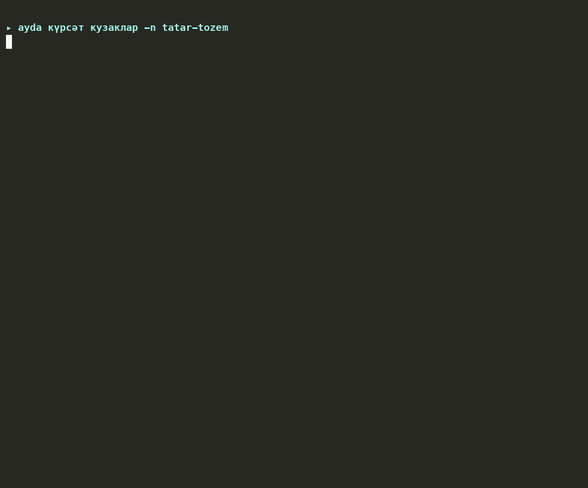
1. Why do this at all
It is tempting to read this project as an April Fools' joke. But we started from an entirely serious thought: the native tongue (tuğan tel) deserves to live not only in poetry, but in the terminal. There is almost no Tatar IT terminology for cloud-native computing: how do you say "reconciliation", "ingress", "replica" in Tatar? We decided not to wait, but to propose — a draft that is arguable but alive, one that anyone can extend through a pull request.
So Tatarnetes is three things at once: (1) a fun tool that lifts your mood; (2) a real engineering sandbox for i18n in bash; (3) a contribution to the digitization of the language — a glossary and a localization any native speaker can edit.
2. Why launch on September 20
The date was not picked at random. Late September for Tatars is mullıq çorı, the season of abundance, when the cimeş (fruits) are gathered from fields and gardens. And in our Tatarch 2.0 license, any work — code, program, book — is called exactly that: "Cimeş", the fruit of labour. The logic is warm: in the season of fruits, we give our own fruit. Räxim itegez — help yourself.
And a happy coincidence: on September 20, 1970, the Tatar writer and poet Marat Käbirov was born — one of the first to drag Tatar literature into the digital world. Literature that went into code; code that began to speak the language of literature — in our own way. So Tatarnetes is a gift to the whole Tatar land and to the international Tatar community, from Kazan to Istanbul, from Helsinki to San Francisco. Millätem danlıqlı, xalqım yumart, kodı irekle.
3. A 30-second demo
Everyone knows kubectl get pods. Now try:
ayda күрсәт кузакларayda (әйдә — "come on, let's go!") translates a Tatar command into kubectl and runs it.
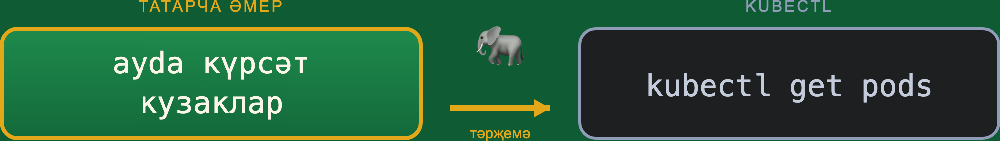
Resources got meaningful Tatar names: a pod is kuzak (a husk/pod — and English pod means a husk too), a node is töen (a knot), a service is xezmät, a namespace is mäydan (a square), an ingress is qapqa (a gate), a secret is ser, a volume is külәm.
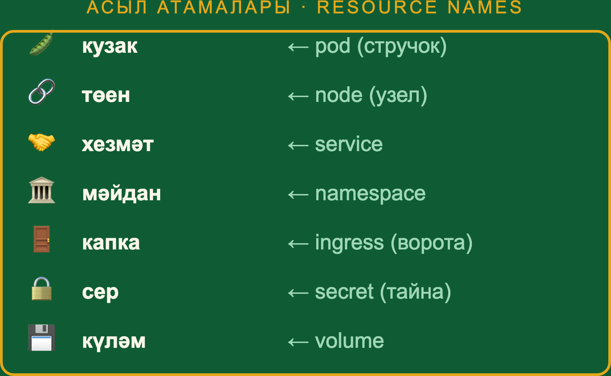
On success you are met by a kind little face in a tübätäy (skullcap) that praises Tatarstan; on error, the same face, but cross, with some gentle Tatar grumbling. In between — a line of Tuqay or a hot öçpoçmaq (a triangular pastry) as a garnish.
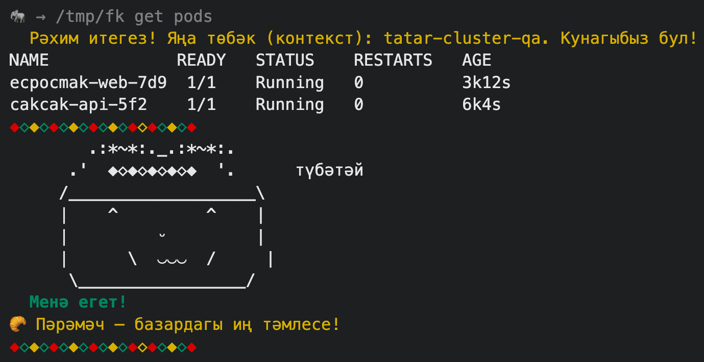
And — yes — plain kubectl works too: ayda get pods passes straight through. There is also a krew plugin: kubectl ayda ....
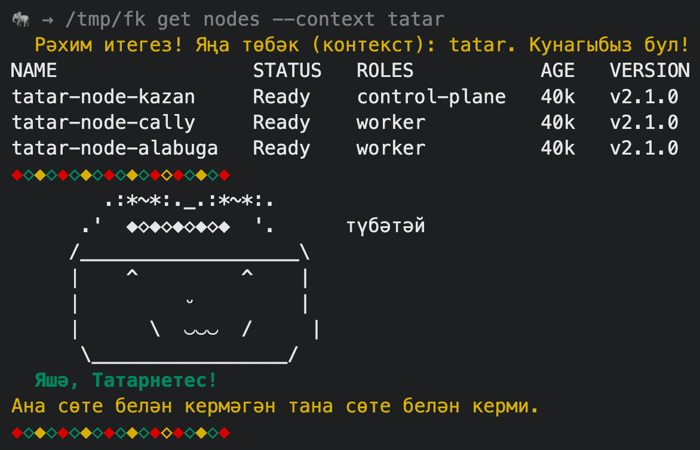
4. Architecture: a thin wrapper
Tatarnetes does not fork Kubernetes line by line. It is a thin, pipe-safe wrapper around kubectl: parse the Tatar, translate to kubectl, run it, wrap the response in national decorations. Schematically the flow is:
user → ayda (bash) ───────────────→ kubectl → Kubernetes API
1. resolve_verb (the verb, with a Latin fallback)
2. resolve_noun (first positional token = resource)
3. tea gateway (tea_now?)
4. run + capture stderr
5. face / praise / scolding + garnish (all to stderr)The bash line count is 1936 (ayda + tos + lib/), and that includes six writing/logic systems, the i18n engine, the corpus, and the tests. Not a single external dependency — only bash, sed, awk, grep — and the target bash is 3.2 (the very one shipped by default on macOS: no associative arrays, with all the multibyte gotchas). That is a deliberate constraint: the tool must run everywhere.
5. i18n in pure bash 3.2
The most interesting part is how the localization lives without a gettext runtime.
The source of truth is .po. Interface strings live in locale/tt.po (39 msgids) and en.po in ordinary gettext format, where Tatar is canonical:
msgid "err.unknown_verb"
msgstr "Мондый әмер юк: «%s»"Building the catalog. scripts/build-catalog.sh (awk) generates pure bash from the .po — a case function lib/catalog.sh, so that at runtime there is neither parsing nor dependencies:
catalog_lookup() { # $1=lang $2=key
case "$1:$2" in
tt:err.unknown_verb) printf '%s' 'Мондый әмер юк: «%s»' ;;
en:err.unknown_verb) printf '%s' 'No such command: "%s"' ;;
...
*) printf '%s' "$2" ;;
esac
}The t() function fetches a string, substitutes arguments, and — if the language is Tatar — runs it through transliteration:
t() {
local key="$1"; shift
local fmt; fmt="$(catalog_lookup "$AYDA_LANG" "$key")"
local out; out="$(printf "$fmt" "$@")"
if [ "$AYDA_LANG" = "tt" ]; then printf '%s' "$out" | alif_render; else printf '%s' "$out"; fi
}Catalog consistency is guarded by CI: a separate job rebuilds catalog.sh from the .po and fails if a diff appears. That keeps the translation and the runtime from drifting apart.
Vowel harmony. We do not hard-code the plural; we generate it from vowel harmony — the suffix -лар/-ләр (back/front row), and after the nasals м/н/ң it becomes -нар/-нәр:
tn() { # кузак→кузаклар, төен→төеннәр, хезмәт→хезмәтләр, мәйдан→мәйданнар, сер→серләр
local w="$1" lastvow lastch front=0 nas=0
lastvow="$(printf '%s' "$w" | grep -oE '[аәоөуүыиеэюёяАӘОӨУҮЫИЕЭ]' | tail -1)"
lastch="$(printf '%s' "$w" | grep -oE '.$')"
case "$lastvow" in ә|ө|ү|е|и|э|ю|ё|Ә|Ө|Ү|Е|И|Э) front=1 ;; esac
case "$lastch" in м|н|ң|М|Н|Ң) nas=1 ;; esac
if [ "$front" -eq 1 ]; then [ "$nas" = 1 ] && echo "${w}нәр" || echo "${w}ләр"
else [ "$nas" = 1 ] && echo "${w}нар" || echo "${w}лар"; fi
}All of this is covered by unit tests (28 checks in tatarnetes, 12 in tataros).
6. Three writing systems of one people
Over a century, Tatar has changed three alphabets — and each is a cultural stratum. Tatarnetes can do all three:
AYDA_ALIF=cyrl ayda ярдәм # Cyrillic (default)
AYDA_ALIF=latin ayda ярдәм # Yañalif — the Latin script of the 1920s–30s
AYDA_ALIF=arab ayda ярдәм # Yaña imlä — Tatar Arabic script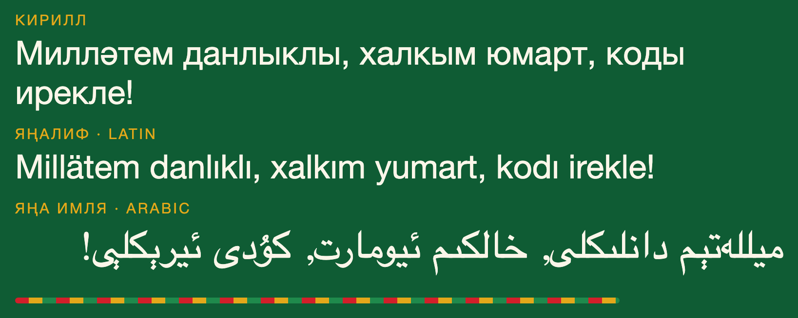
You can also type commands in Latin (for keyboards without Cyrillic). And we did not create a second dictionary: first we try to recognize the input as-is, and if that fails, we transliterate the input to Cyrillic and try again. The English kubectl verbs are not broken by this:
resolve_noun() {
local n="$1" r c
r="$(translate_noun "$n")"; [ "$r" != "$n" ] && { printf '%s' "$r"; return 0; } # found as-is
c="$(printf '%s' "$n" | latin_to_cyrl)" # Latin → Cyrillic
r="$(translate_noun "$c")"
if [ "$r" != "$c" ]; then printf '%s' "$r"; else printf '%s' "$n"; fi # otherwise — as entered
}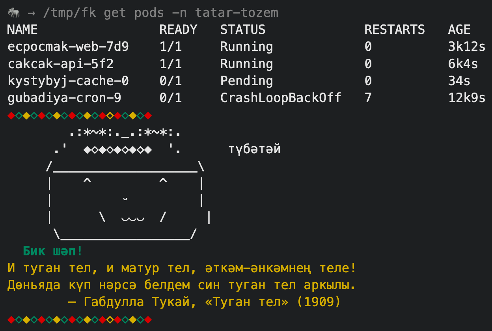
The Arabic script (yaña imlä, the 1920s reform) is phonemic: every sound is its own letter, all vowels are written, and the front/back row is distinguished (o ۇ / ö ۆ, u و / ü ۈ). At the start of a word a vowel takes a carrier-hamza ئ. We output in logical order — the RTL direction and letter-joining are done by the terminal itself. The word-initial hamza is added via awk (per word, byte-safe), and letters are replaced by individual substitutions:
cyrl_to_arab() {
awk '{ n=split($0,a,/ /); o=""
for(i=1;i<=n;i++){ w=a[i]
if (w ~ /^(а|ә|о|ө|у|ү|ы|и|э|е|я|ю|ё|А|Ә|О|Ө|У|Ү|Ы|И|Э|Е)/) w="ئ" w
o=o (i>1?" ":"") w } print o }' \
| sed -e 's/я/یا/g' -e 's/а/ا/g' -e 's/ә/ە/g' -e 's/о/ۇ/g' -e 's/ө/ۆ/g' \
-e 's/у/و/g' -e 's/ү/ۈ/g' -e 's/к/ك/g' -e 's/т/ت/g' ... # one letter at a time
}We verified it not by eye, but by codepoints:
Татарнетес → تاتارنېتېس
U+062A TEH · U+0627 ALEF · U+062A TEH · U+0627 ALEF · U+0631 REH · U+0646 NOON
· U+06D0 E · U+062A TEH · U+06D0 E · U+0633 SEEN = t-a-t-a-r-n-e-t-e-s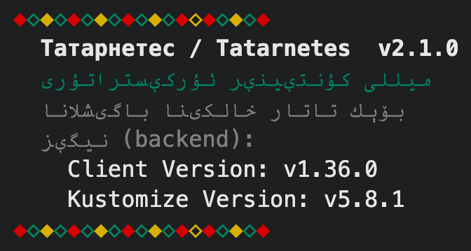
7. The cluster goes for çäy (tea)
Several times a day, Tatarnetes stops for tea with milk and qıstıbıy. Knock during that window and you get a picture and a polite "Qıstırılma, tuğanqay — bezgä dä çäy eçärgä kiräk!" ("Don't butt in, dear friend — we need our tea too!").
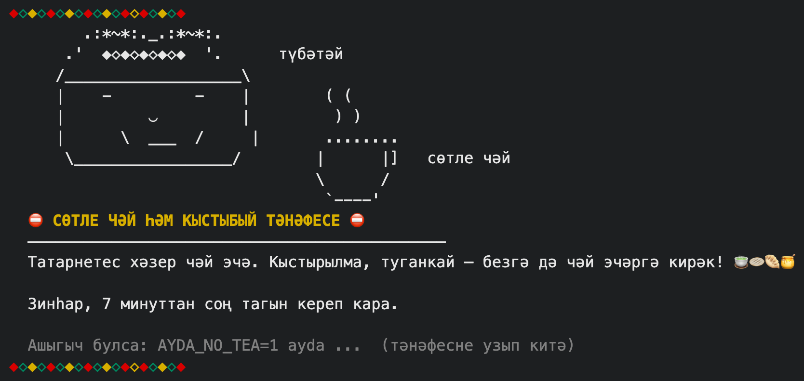
The schedule is deterministic — derived from the calendar day, three windows of 7 minutes:
tea_windows() {
today=$(date +%Y%m%d); seed=$(( 10#$today )); i=1
while [ "$i" -le 3 ]; do
m=$(( (seed * (i * 37 + 13) + i * 101) % 1440 )) # minute of the day, 0..1439
echo "$m 7"; i=$(( i + 1 ))
done
}The same formula is mirrored in ui/app.js (teaWindowsFor), so the console and the browser see the same windows down to the minute. The cluster drinks its tea everywhere, for real — in pipes and in CI too: çäy is çäy, exit code 42. Don't want to wait? There's an honest switch, AYDA_NO_TEA=1 (our tests use it too); to force a break for a demo, AYDA_FORCE_TEA=1. A robot, mind you, won't refuse tea either — it just knows the password.
8. Pipe-safety and error translation
All the "art" (the face, the praise, the garnish, the carpet) goes to stderr, while stdout stays clean — so ayda күрсәт кузаклар -o json | jq works like ordinary kubectl. To still intercept and translate an error, we juggle file descriptors: the child's stdout goes straight through (fd 3), and stderr is caught into a variable:
{ ERRTEXT="$("$KUBECTL_BIN" "$kverb" ${kargs[@]+"${kargs[@]}"} 2>&1 1>&3 3>&-)"; RC=$?; } 3>&1Then, from the error text, we pick a Tatar hint without hiding the original: NotFound → "Tabılmadı — isemen yäki mäydannı tikşer" ("Not found — check the name or the namespace"), Forbidden → "Röxsät yuq — xoquqlarıňnı (RBAC) tikşer" ("No permission — check your rights (RBAC)"), timeouts, connection refused, and so on.
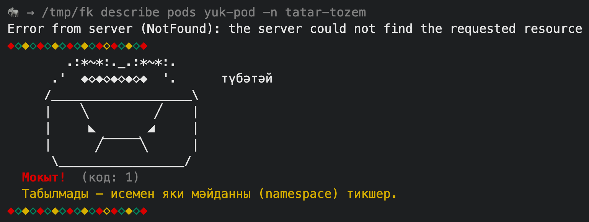
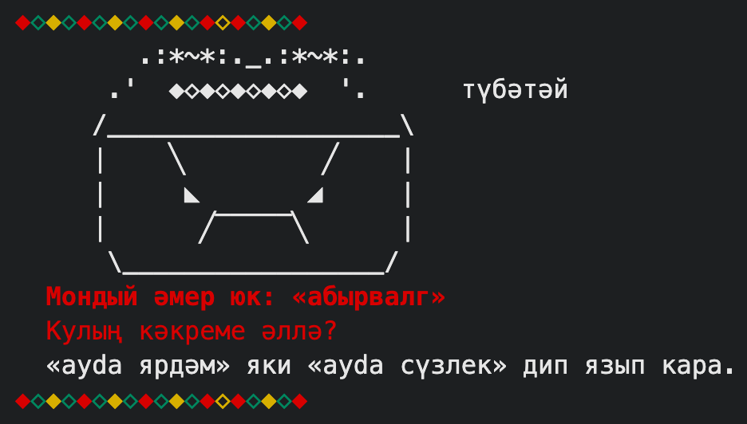
9. Character as features
We tried to make "national character" not a stereotype, but a useful feature.
- Xucalıqçıllıq (thrift). Ask for too many replicas and the system reminds you, in Tatar, to be frugal: "Aqçanı äräm itmä!" ("Don't waste money!"). The threshold is configurable via
AYDA_FINOPS_MAX. - Qunaqçıllıq (hospitality). The first time you enter a new context, you are welcomed as a guest: "Räxim itegez! Yaña töbäk (context): …. Qunağıbız bul!" (we remember the last context in
~/.cache/ayda/last_ctx). - The calendar. On Fridays — "Comğağız möbaräk bulsın!" ("Blessed Friday!"); on Näwrüz / Sabantuy / holidays — a festive banner (the 2026 dates verified against the Decree of the Rais of Tatarstan).
10. A cultural corpus and the fight against hallucinations
Poems and proverbs are kept in data/*.tt (9 poetic fragments, 14 proverbs), so a native speaker can extend them via PR. Here we have an iron rule: the classics must not be distorted. Every line of Tuqay, Cälil, Därdmänd, Sibğat Xäkim and the folk mäqallär is verified against sources, not against a neural network's memory (there is a table of sources in data/VERIFICATION.tt.md). Where a source could not be confirmed, the author did not make it into the corpus — accuracy over completeness.
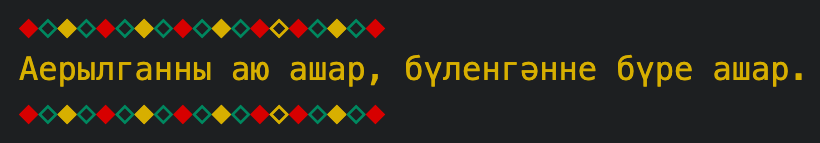
11. The Tatarch 2.0 license
Legally, Tatarch 2.0 is equivalent to the Apache License 2.0 — the same rights and conditions (copyright grant, patent grant with retaliation, four redistribution conditions, disclaimer of warranty, limitation of liability). We guarded compatibility deliberately. What differs is the form and the spirit:
- An epic preamble instead of clerical prose: the license opens with words about the glorious history, generosity and hospitality (qunaqçıllıq) of the Tatar people — and reads like a dastan (an epic).
- "Cimeş". The work is called not "the Work" but Cimeş (fruit), and is distributed "irken, tatar qunaqnı qarşılağandaĭ" ("freely, as a Tatar welcomes a guest").
- A people's heritage. Each work is proclaimed to spiritually belong to the whole great Tatar people. Right there is an honest legal disclaimer: this is an honorary statement, it creates no property rights, and copyright stays with the rights holder. A beautiful metaphor must not get in the way of real use.
- Bilingual, Tatar first (and all the documentation too). Latin/Arabic are auto-transliterated.
In short: take it as freely as under Apache 2.0 — only now that freedom wears a tübätäy.
12. TatarOS Linux and the Tatarnetes UI
Three projects add up to a single national stack:
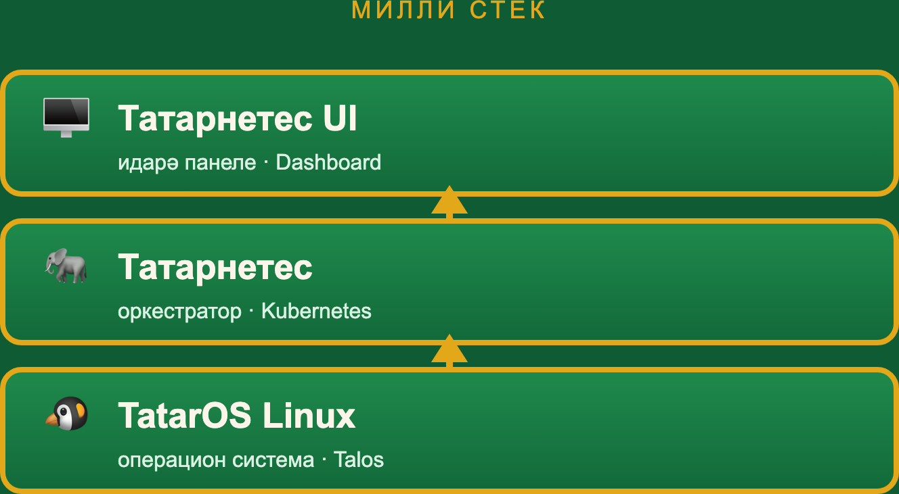
TatarOS Linux is a wrapper over Talos (the immutable OS for Kubernetes). Its CLI is called tos and differs in an important, ideological way: it brings up a cluster not with Kubernetes, but with Tatarnetes. tos татарнетес-конфиг hands you access — and in the cluster, pure Tatarnetes awaits.
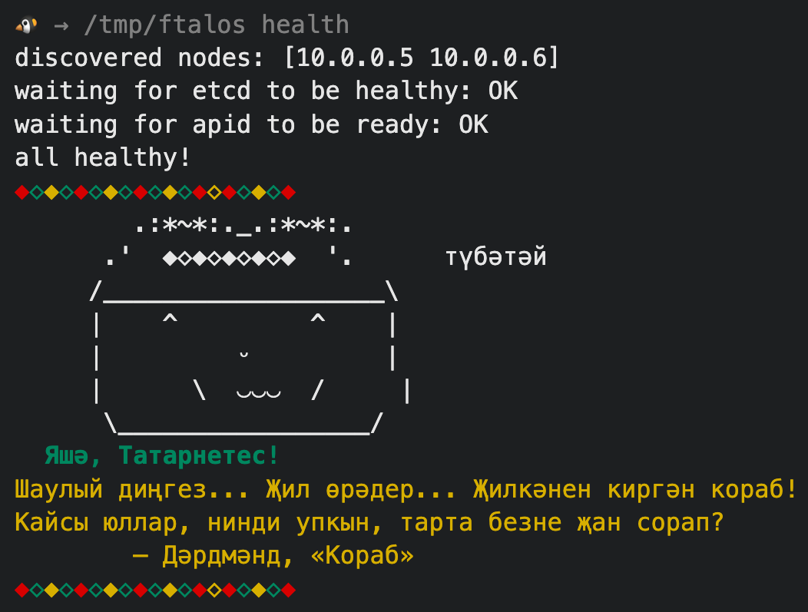
The Tatarnetes UI is a fork of the official dashboard: a Tatar palette (green-white-red plus gold), a background of a real Tatar kiläm (a carpet, with a tamğa, lalälär tulips, and islimi ornament), and the node identifiers are tamğa, ancestral clan marks. During a break the panel also closes and shows a şamail banner.
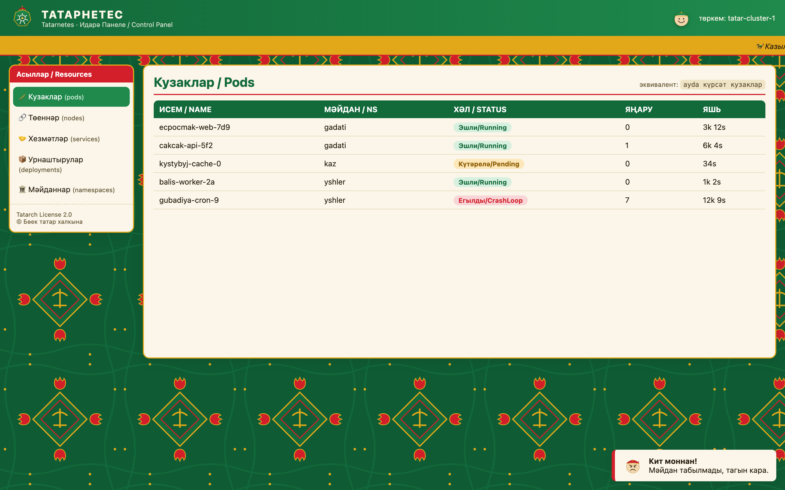
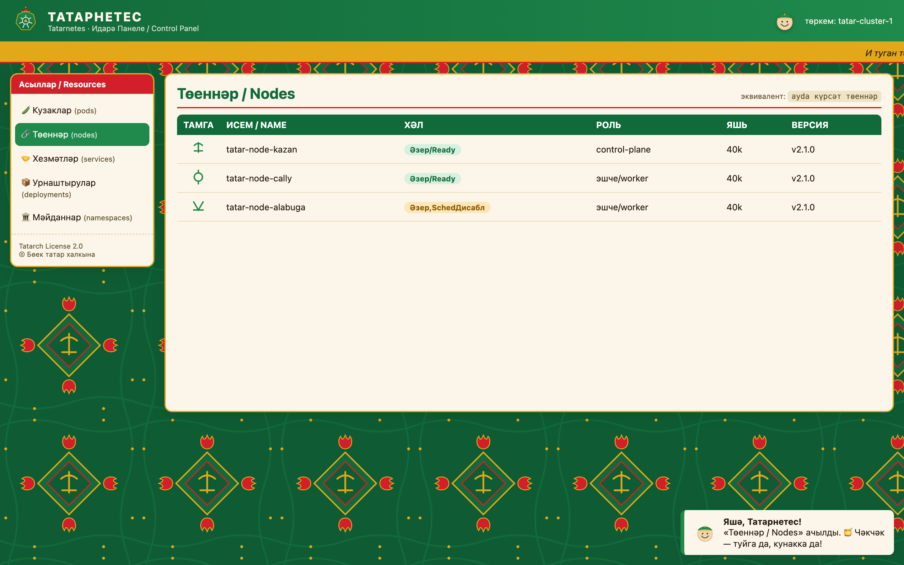
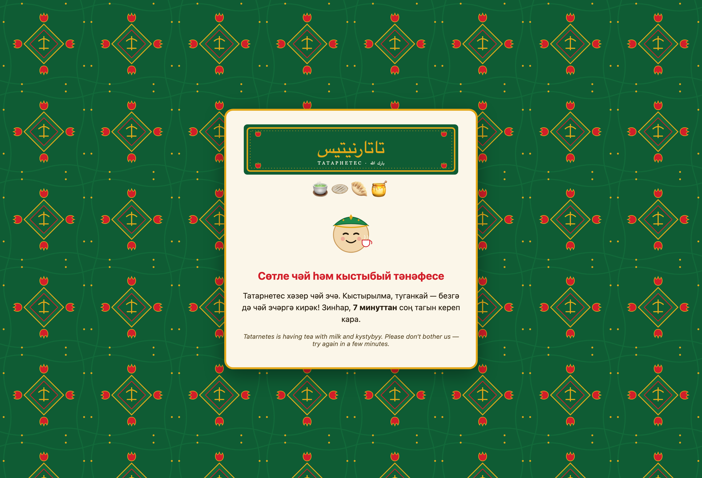
13. How we battle-tested it
Here is where it gets interesting — we did not take our own word for it and ran everything on a real CozyStack cluster: an isolated tenant tncf, a tenant Kubernetes on Talos v1.13.6 / k8s v1.35.6 (2 nodes), a separate kubeconfig, every command with an explicit --context.
ayda — the whole battle matrix passed on the live cluster:
| Check | Result (live) | exit |
|---|---|---|
ayda күрсәт кузаклар/төеннәр | real pods/nodes + decoration in stderr | 0 |
ayda kürsät kuzaklar (Latin) | identical to Cyrillic | 0 |
ayda get pods (passthrough) | plain kubectl | 0 |
ayda сөйлә кузак yuk-pod | Error … NotFound + "Tabılmadı…" | 1 |
| RBAC: SA without rights | Error … Forbidden … cannot list pods + "Röxsät yuq…" | 1 |
FinOps: --replicas=12 | really scales to 12 + "Aqçanı äräm itmä! 12 replica…" | 0 |
pipe-safety: … -o json | jq '.items|length' | 4 (no art leaked into stdout) | 0 |
AYDA_ALIF=latin/arab | Latin / RTL Arabic | 0 |
ayda абырвалг (gibberish) | — | 64 |
AYDA_FORCE_TEA=1 ayda … | the tea screen | 42 |
Latency (median of 5 runs): ayda 774 ms vs kubectl 812 ms. The wrapper's overhead is within the noise (≈0, actually −5%). In other words, the "national layer" does not cost you performance.
tos on real Talos. Against a managed cluster, the cluster operations hit the hosted control plane (worker nodes do not forward tenant requests — no request forwarding), so we brought up a separate standalone Talos node v1.11.2 and ran the day-2 verbs live:
tos вакыт→ real NTP data;tos дисклар→ disks;tos сәламәтлек→ health;tos яңадан-кабыз→ a real node reboot (actor ID, sequence START, node went away and came back);tos татарнетес-конфиг→ a real, working kubeconfig of 2270 bytes (CA-data,server: https://10.244.76.195:6443, clustertatarnetes). The headline feature, proven live.
And in battle we also caught — and immediately fixed — a bug. tos күрсәт төеннәр mapped to talosctl get nodes, but talosctl has no COSI resource nodes (resource "nodes" is not registered) — the command always failed. We fixed it: төен → members (cluster.Member), updated the dictionary, help, docs and tests, and re-verified the fix on that same live node: tos күрсәт төеннәр → talosctl get members returns a real cluster member. Result: 7/7 tos verbs live — OK, no bugs left.
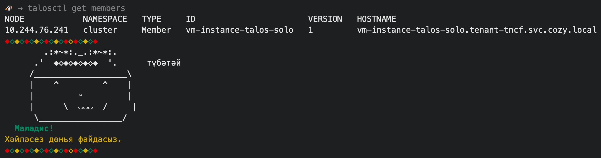
This is exactly what battle testing is for — mocks never surface things like this.
14. Gotchas
The most honest section — all of it from the project's own code and from the live run:
sedon macOS cuts by bytes, not by letters. Cyrillic/Arabic are 2 bytes each, and the class[Хх]in BSD sed matches individual bytes, shredding UTF-8. Because of this the first Arabic version was broken; the cure is whole-letter substitutions plus verification by codepoints.- Too greedy a translation renamed someone else's pod. A pod literally named
эш("work") was turned by the command intoget pods jobs. Fix: translate only the first positional token (the resource type); leave names and flag values alone. - bash 3.2 and the guillemet quote
«$verb»— the multibyte»"sticks" to the variable name; curly braces${verb}save the day. Andprintf "$fmt"with a%sand no argument silently eats the placeholder. - [from battle] Talos apid rejects a client cert without the EKU
clientAuth(tls: bad certificate). A hand-rolledO=os:admincert from the Talos CA only worked withextendedKeyUsage=clientAuth. - [from battle] managed CozyStack = a hosted control plane: worker Talos nodes do not forward tenant requests;
talosctl versiongoes through, butget/health/kubeconfigrequire a standalone control plane. - [from battle]
talosctl get nodesdoes not exist → the mappingtöen → members. Caught and fixed right in battle, the fix re-verified on a live node — no bugs left in the matrix (7/7).
15. Results and how to help
Readiness after the battle run: ayda and the UI are demo-ready right away; tos too: on a standalone Talos node it passed 7/7 day-2 verbs live (вакыт, дисклар, сәламәтлек, яңадан-кабыз with a real reboot, татарнетес-конфиг with a working kubeconfig, and күрсәт төеннәр → get members after the fix). Against a managed cluster, some operations hit the hosted control plane — a property of the test rig, not a bug.
git clone https://github.com/tatar-ncf/tatarnetes.git
cd tatarnetes && ./install.sh
ayda ярдәмHelping is easy and pleasant:
- translate the interface — edit
locale/*.po, send a PR (no need to touch code); - extend the glossary —
docs/terminology.tt.md(currently 36 terms); - add a stanza of a classic — always with a source citation.
Project metrics
Lines of bash (ayda+tos+lib) | 1936 |
Localization keys (tt.po) | 39 |
| Terms in the glossary | 36 |
| Unit checks (tatarnetes / tataros) | 28 / 12 |
| Corpus (poems / proverbs) | 9 / 14 |
| Writing systems | 3 (Cyrillic / Yañalif / Yaña imlä) |
Overhead ayda vs kubectl | ≈0 (−5%) |
| Repositories | 3 |
Gallery
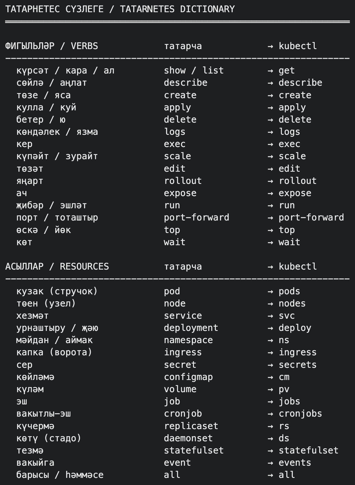
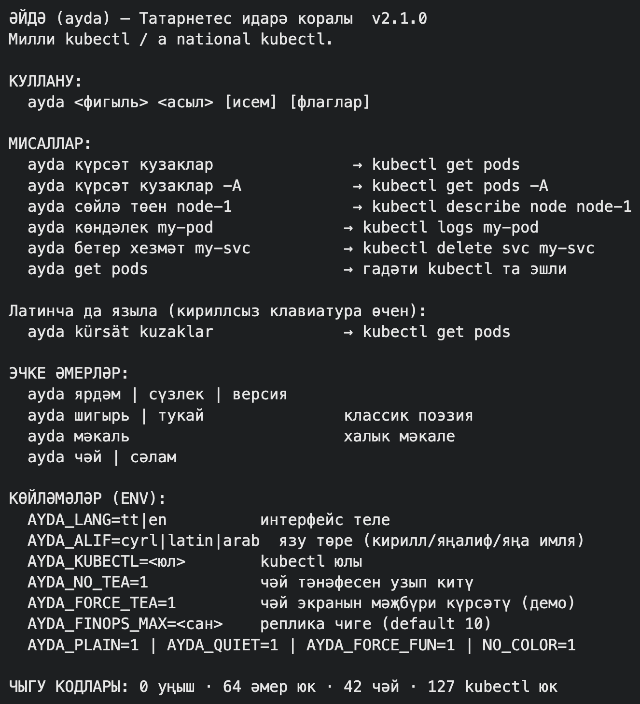
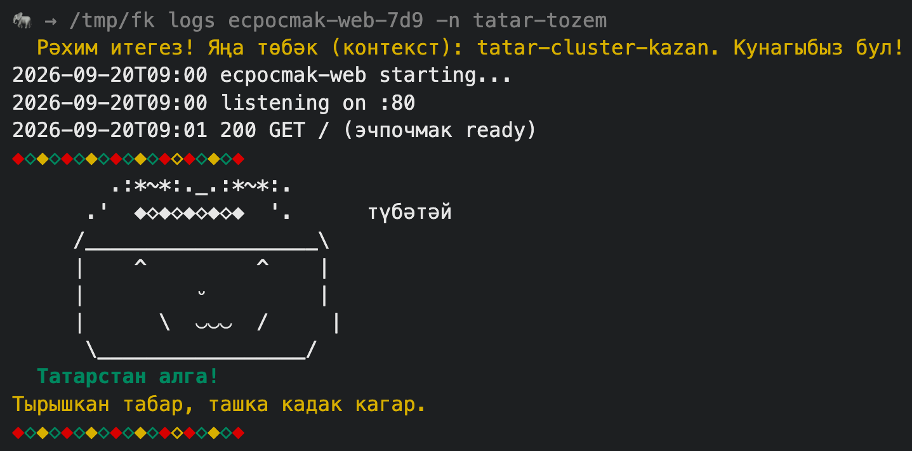
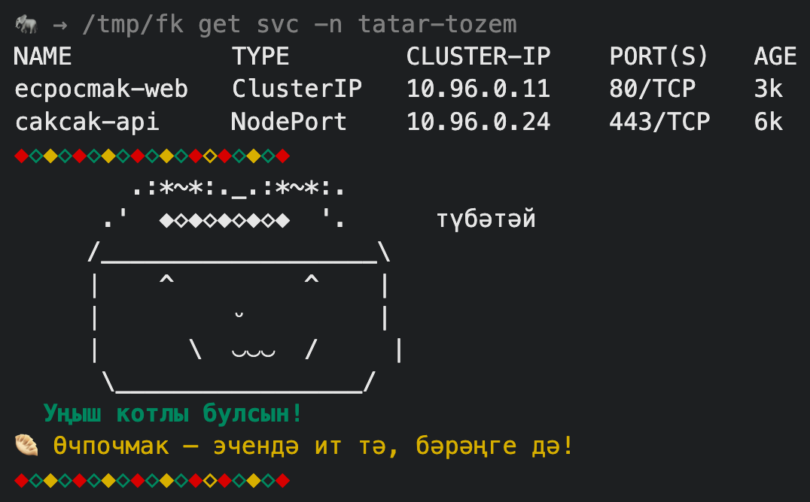
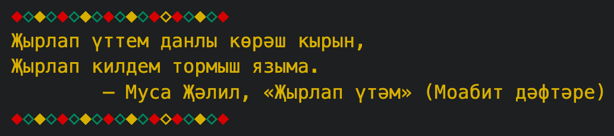
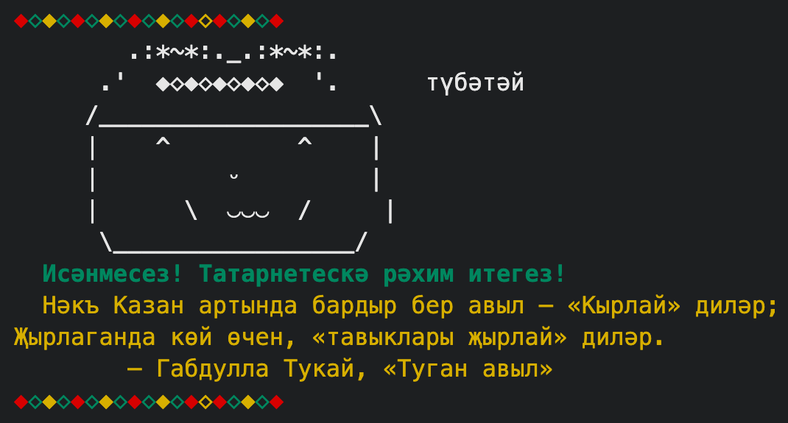
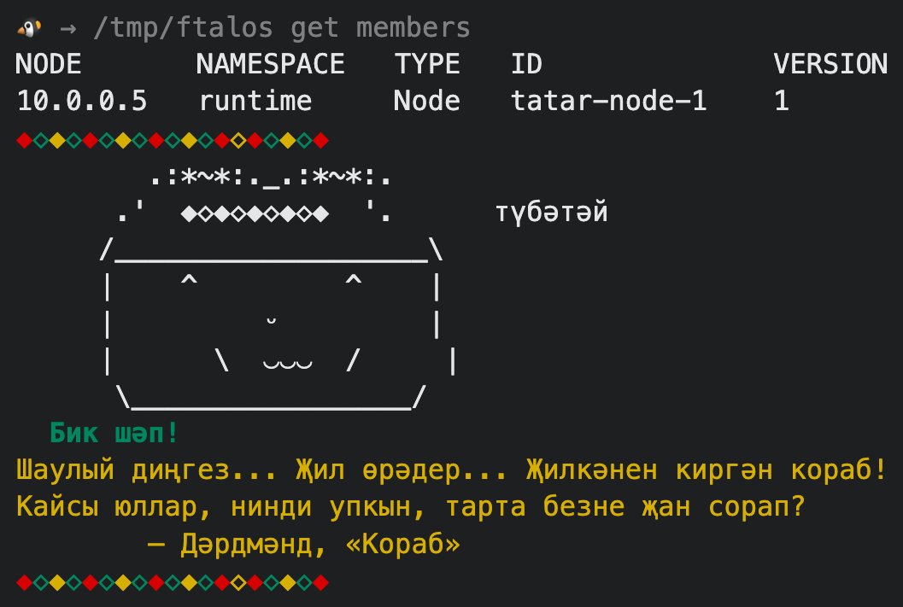
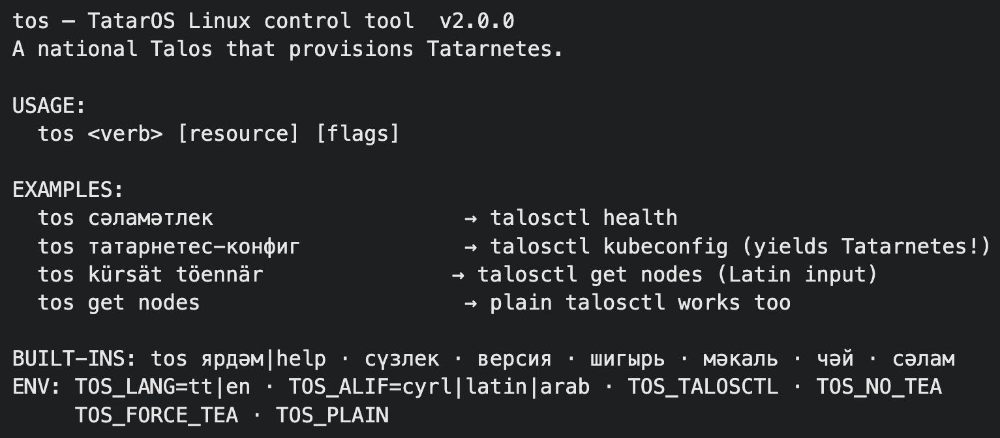
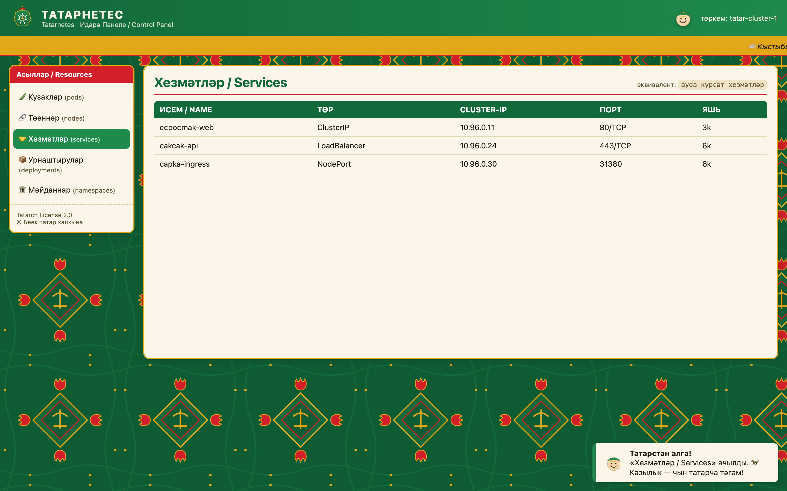
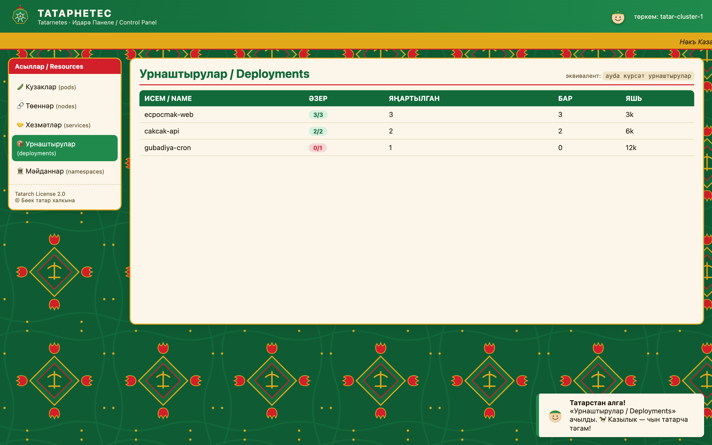
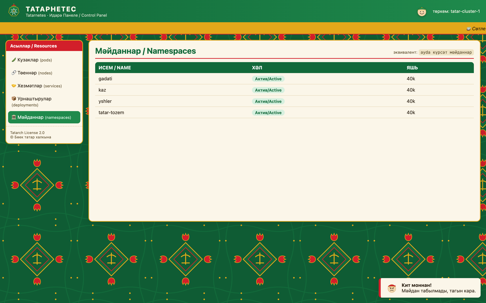
Screencasts (GIF): a tour of the console (live run) · a tour of the UI.
{kind=link}
{kind=link}
Links
Organization: github.com/tatar-ncf — the Tatar-Native Computing Foundation
Repositories:
- 🐘 tatar-ncf/tatarnetes — the
aydaCLI, a national Kubernetes - 🖥 tatar-ncf/tatarnetes-ui — the idarä panele (dashboard)
- 🐧 tatar-ncf/tataros — the
tosCLI, TatarOS Linux (brings up Tatarnetes)
Useful:
- 📜 The Tatarch 2.0 license
- 📖 A Tatar Kubernetes glossary
- 🌐 Localization (translate via PR)
- 🔌 The krew plugin
kubectl ayda - ✊ The foundation's manifesto
Yomğaq (in closing)
We did this because the native tongue deserves to live in the terminal too. Technology need not be cold: let the cluster wear a tübätäy, offer you çäkçäk, and go for tea — while still honestly translating errors, not slowing down, and surviving a battle run. All of it under Tatarch 2.0, all of it for the great Tatar people and Tatars the world over.
Räxmät yauğırı! Tatarstan alğa! Yäşä, irekle kod! 🟢⚪🔴